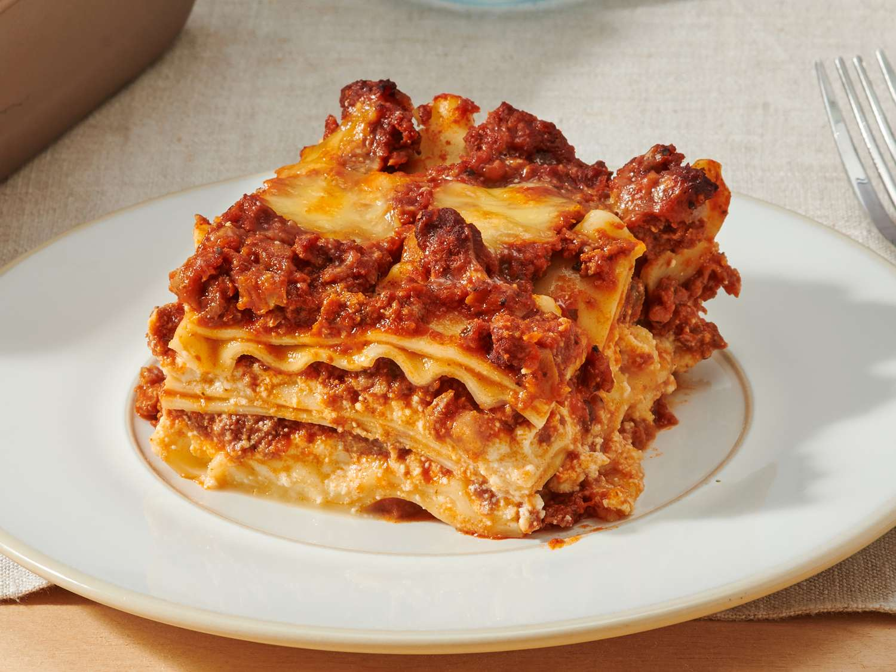

Home
Lasagna

Description
Lasagna combines a hearty tomato and meat ragu with a creamy cheese filling, layered sequentially in a baking dish, and baked until bubbly and golden brown.
Ingredients
- Ground Beef
- Marinara
- Lasagna noodles
- Cheese
- Italian Seasoning, salt, and pepper
Steps
- Cook the meat: Brown the ground beef in a pan, then stir in the marinara sauce and let it simmer.
- Layer the dish: Spread a thin layer of meat sauce in a baking pan, add noodles, top with cheese mixture and meat sauce, and repeat the layers.
- Add final cheese: Top the final layer of noodles with the remaining meat sauce and a heavy layer of mozzarella and Parmesan cheese.
- Bake: Cover with foil and bake at 375°F (190°C) for 30 minutes, then uncover and bake for 15 more minutes until golden and bubbly.